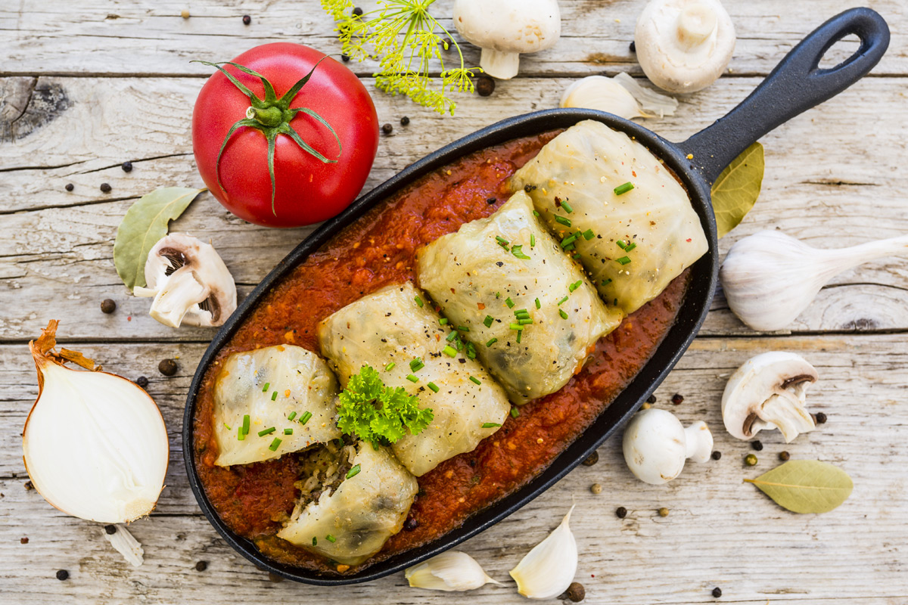
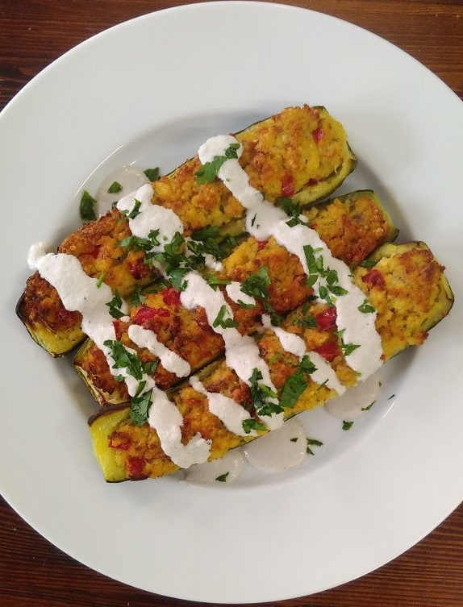
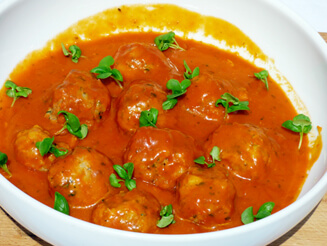
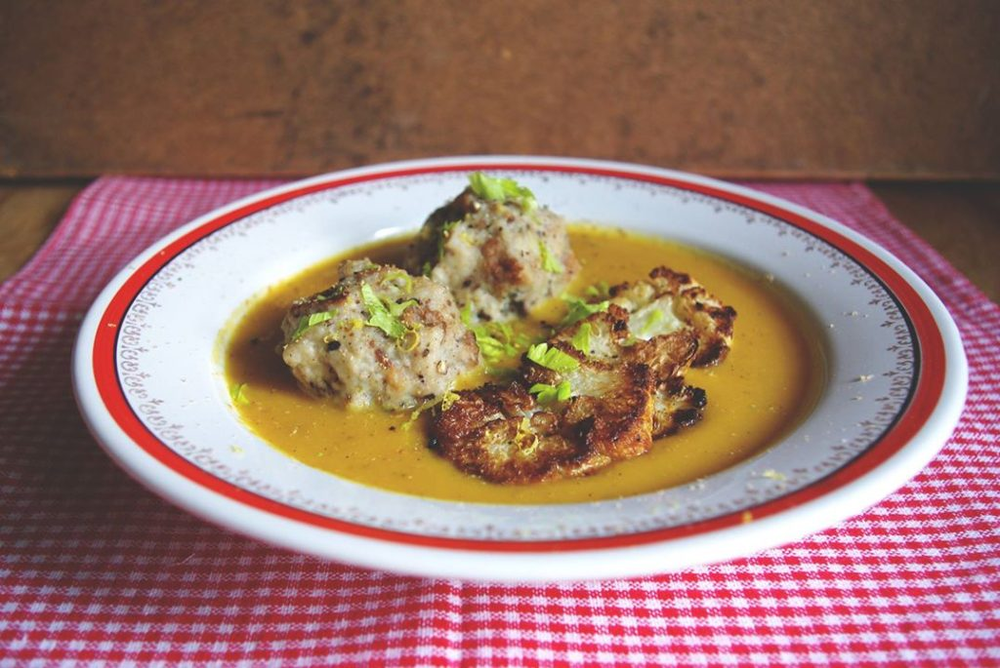
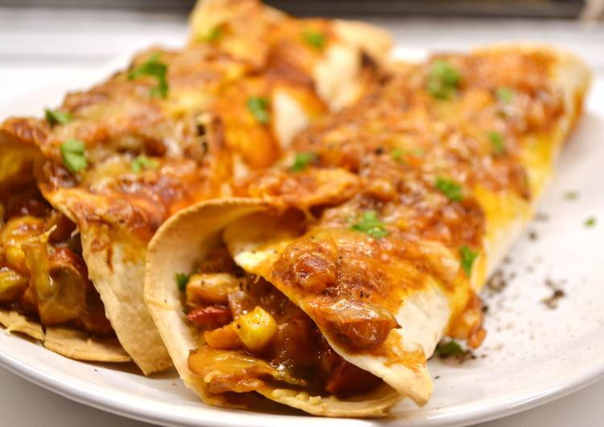

Vega Futár


Menü
Gombával töltött káposzta
Ár: 1090 Ft
Összetevők:
- Gomba
- Savanyított káposzta
- Hajdina
- Tejföl
Kölessel és lencsével töltött cukkini
Ár: 1190 Ft
Összetevők:
- Cukkini
- Köles
- Lencse
- Tojás
- Tejföl
Paradicsomos kölesgombóc
Ár: 1090 Ft
Összetevők:
- Paradicsomszósz
- Köles
- Petrezselyem
- Sajt
Vegetáriánus „vadas” karfiol steakkel és zsemlegombóccal
Ár: 1190 Ft
Összetevők:
- Karfiol
- Rozskenyér
- Petrezselyem
- Tojás
- Száraz fehérbor
Zöldséges enchillada
Ár: 990 Ft
Összetevők:
- Paprika
- Paradicsom
- Gomba
- Kukorica
- Cheddar sajt
- Chilis paradicsomszósz